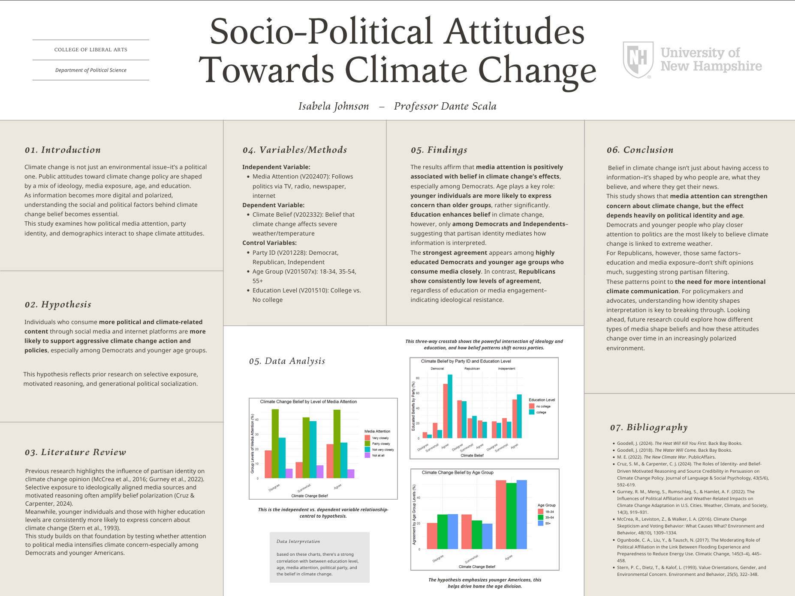

Undergraduate Research Conference | Quantitative Data Analysis Using RStudio
This undergraduate research project examined how socio-political factors influence attitudes toward climate change using survey data from the 2020 American National Election Studies (ANES) dataset.
The study analyzed relationships between climate change beliefs, political identity, media attention, age, and education level through quantitative data analysis and visualization techniques.
How do socio-political factors influence individual attitudes and perceptions regarding climate change?
Individuals who consume more political and climate-related content through social media and internet platforms are more likely to support stronger climate change action and policies, particularly among Democratic respondents and younger age groups.
The project involved preparing and restructuring ANES survey data to evaluate relationships between climate change attitudes and socio-political characteristics. Key variables were recoded to improve interpretation, including political identity, media attention, age group, education level, and climate change beliefs.
Bivariate analysis was conducted using crosstabulations and proportional comparisons to evaluate relationships between climate change beliefs and individual factors. Additional multivariate analysis was performed using three-way crosstabulations to examine how multiple social factors interact when explaining climate attitudes.
The final research poster presented three primary analyses examining relationships between climate change beliefs and socio-political characteristics:
The analysis identified relationships between socio-political characteristics and climate change attitudes. Political identity demonstrated notable differences in climate change beliefs, while comparisons involving media attention and age groups revealed additional patterns in how individuals perceive climate-related issues.
The findings highlight how demographic and social factors can influence public attitudes toward environmental issues and policy discussions.
